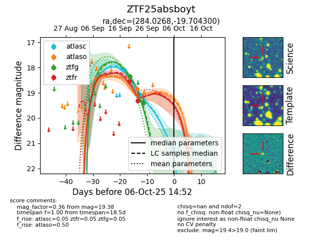
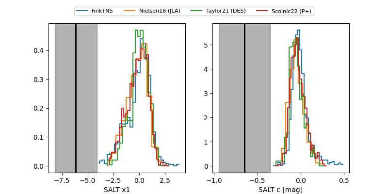

FINK: ZTF25absboyt
Lasair: ZTF25absboyt
ALeRCE: ZTF25absboyt
ZTF25absboyt (ztf,fink)
equatorial (ra, dec) = (284.0268,-19.70430)
galactic (l, b) = (15.7340,-9.83505)


last atlasc=18.81, atlaso=18.84, ztfg=19.38, ztfr=19.31
2 atlasc, 1 atlaso, 2 ztfg, 2 ztfr detections